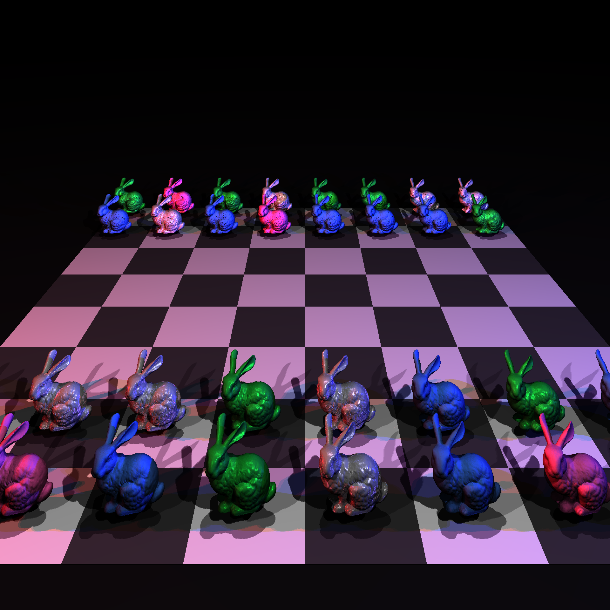
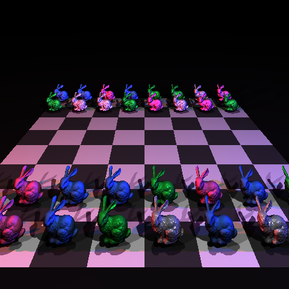

Our final showcase is a Neon Bunny Chess scene with 32 high-resolution Stanford Bunny models arranged on an 8x8 chessboard tile system. Because each bunny consists of roughly 69,000 triangles, the scene contains over 2.2 million primitives, exceeding the 1-million primitive requirement.
The scene is illuminated by a 5-point lighting setup: standard key/fill/rim lights, along with deep red and blue neon point lights on the X-axis to show specular highlights and glossy reflections on different BRDFs.


We implemented a Bounding Volume Hierarchy (BVH) to speed up rendering. Without spatial partitioning, calculating intersections for 2.2 million triangles per pixel makes rendering practically impossible on a standard CPU. Below is the performance comparison for our showcase scene.
| Metric | Without BVH (Brute Force) | With BVH |
|---|---|---|
| Render Time (1920x1920) | 6 Hours | ~7 Minutes |
As per the project requirements, our engine supports toggling the acceleration structure on or off. To render without the BVH, open buildBunny.cpp and set the boolean flag use_acceleration = false; at the end of the World::build() function.
The following World::build functions generate the images seen on this page:
buildBunny.cpp - Generates the High-Quality and Low-Quality Neon Bunny Chess showcase renders.